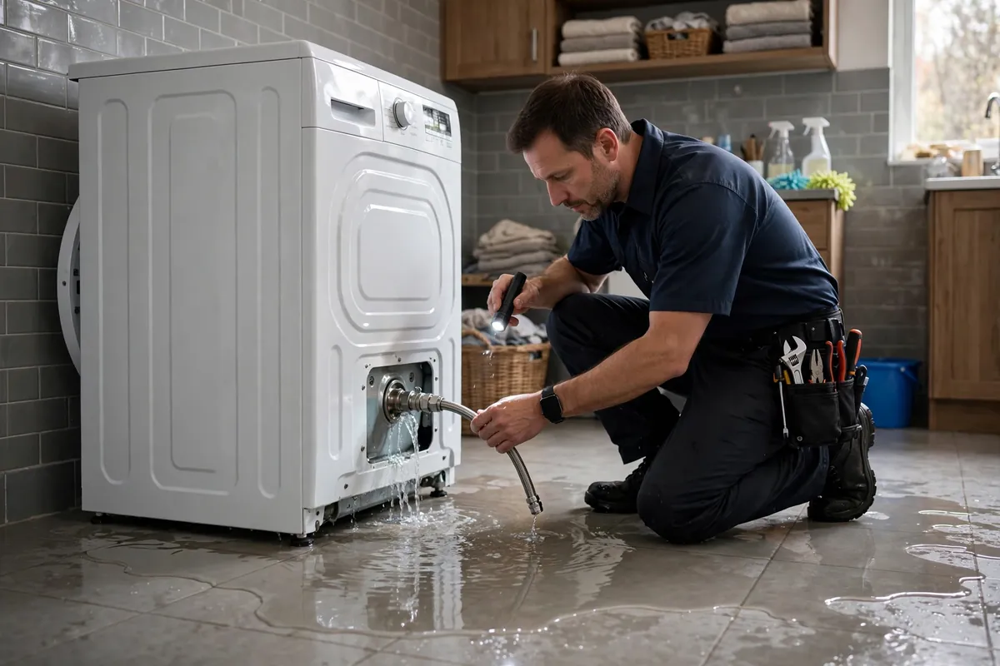

Appliance Leak Cleanup in Hollywood, FL
The washing machine, the dishwasher, the refrigerator ice maker — the appliances you trust with water are also the most common sources of indoor flooding. A burst washer hose can release gallons per minute; a slow dishwasher seep can rot a subfloor for months before anyone looks behind the unit. Appliance leak cleanup in Hollywood, FL focuses on fast extraction, finding how far water traveled behind and beneath the appliance, and drying the hidden spaces most people never see.

Understanding Appliance Leak Cleanup in Hollywood
Rubber washing machine supply hoses are the classic culprit — they weaken with age and let go without warning, often mid-cycle. Dishwashers leak at door seals and drain connections. Refrigerator ice-maker lines, usually thin plastic or copper tubing, crack and drip steadily into the wall cavity or under the flooring. Water heater failures in garages and utility closets round out the list. The pattern is consistent: the visible puddle is only part of it, because water runs under cabinets, behind toe-kicks, and into wall bases.
Hollywood kitchens and laundry rooms often sit on slab foundations, which changes the equation — water spreads across the slab and wicks upward into drywall and cabinet bases instead of draining away. Particle-board cabinetry swells and doesn't recover; tile floors can look fine while the underlayment beneath stays wet. Moisture meters tell the real story behind and beneath the appliance, where eyes can't reach.
How We Handle the Job
First the appliance is shut off and disconnected if needed — there is no point drying while water is still feeding the loss. We pull the unit out to expose the wall and floor behind it, extract standing water, and check moisture in the drywall, baseboards, and subfloor or slab. Wet insulation and swollen cabinet toe-kicks are flagged early, since they rarely dry in place. Then air movers and dehumidifiers go in, aimed at the hidden wet zones rather than just the open floor.
Cabinet bases and wall bottoms get moisture readings on repeat visits until they hit their dry standard — slab-adjacent drywall in particular is checked, never assumed. If the flooring under the appliance can't be saved, you'll know before reconstruction starts, with photos for the adjuster. Related services such as emergency water extraction, structural drying, and flood cleanup often connect to the same loss depending on conditions on site.
Local Response and Insurance Support
Searching for appliance leak cleanup near me usually means you need help without delay. We answer emergency calls around the clock. Documentation — photos and moisture readings — supports conversations with your insurance carrier when the loss is sudden and accidental. We do not decide coverage; we provide clear technical information about the work performed.
When to Call
Call if you have active water, wet materials that are not drying, odors after a leak, or a backup that may involve contaminated water. Early action in Hollywood’s climate is almost always less disruptive than waiting. For neighborhood-specific service, see our service areas. For the full list of capabilities, visit all services.
Frequently Asked Questions
My washing machine hose burst — what should I do first?
Shut off the water valves behind the machine, or the main house shutoff if you can't reach them, then cut power to the area if water is near outlets. Move what you can out of the water's path, then call. A burst hose can put down an enormous volume in minutes, and the faster extraction starts, the less ends up inside your walls.
The leak was slow and I just found it. Is it too late?
Not necessarily, but slow leaks cause a different kind of damage: prolonged moisture that swells subflooring, breeds musty odors, and weakens cabinet bases. The visible area may look minor while the hidden damage is extensive. A moisture inspection shows how far it traveled — don't assume a small stain means a small problem.
Should I replace my rubber washer hoses?
Yes — braided stainless-steel supply hoses resist bursting far better than plain rubber, and they're inexpensive. Replace them every few years regardless of how they look, and consider an automatic shutoff valve that detects leaks. It's the cheapest flood prevention in the house.
Will my homeowner's insurance cover an appliance leak?
Sudden and accidental appliance failures, like a burst hose, are typically covered including the resulting water damage. Long-term seepage from poor maintenance often is not. The failed appliance itself is usually excluded, but the water damage it caused generally isn't. Your adjuster makes the final call.